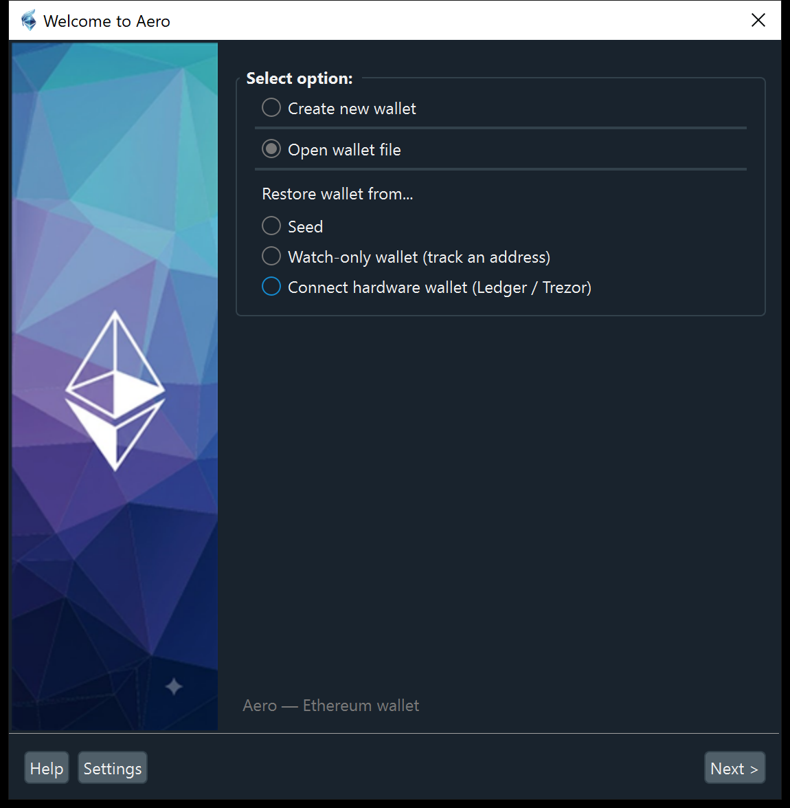
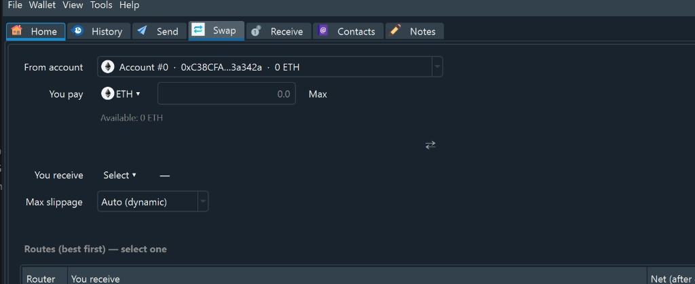
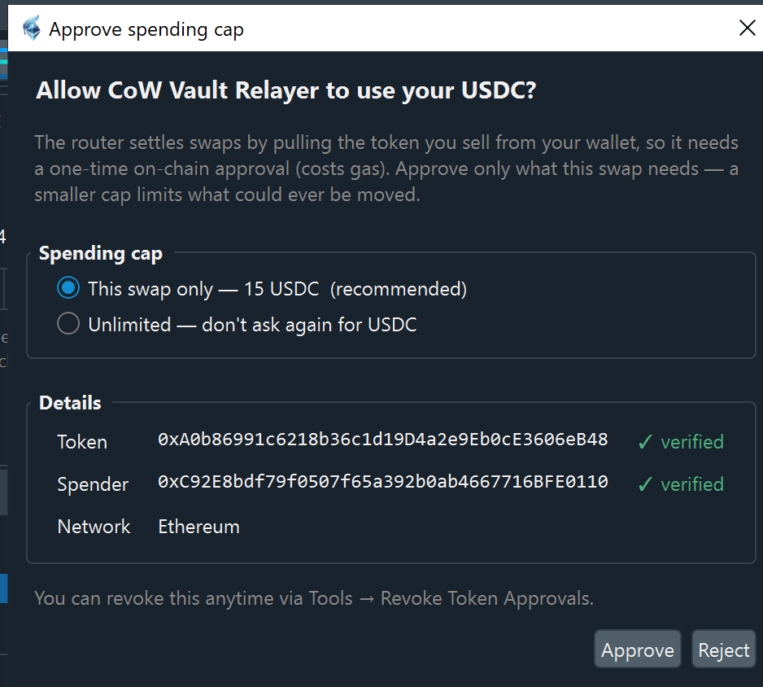

Screenshots

First run — create a new wallet, open an existing file, restore from a seed,
track an address (watch-only), or connect a Ledger / Trezor.

The wallet window — tabs for Home, History, Send, Swap, Receive, Contacts and
Notes. The Swap tab compares keyless routers and settles over Tor.

Token approvals are explicit: approve only what a swap needs (not unlimited),
with the spender and token shown and checked against a verified list.
Screenshots are from the Windows build; the interface is identical on every
supported network.